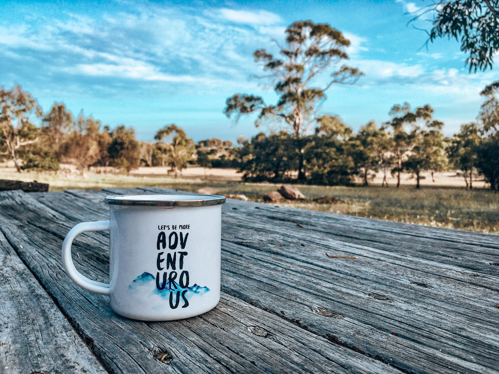

Blog posts

Going Beyond Reduce, Reuse, Recycle
Have you been applying the reduce, reuse, recycle concept in your life already? I'll give you six more ways how you can make a difference on your travels by going beyond the 3Rs.

Hidden Plastic that You Didn‘t Know Existed – Food Edition
When it comes to avoiding plastic while traveling, I bet most of you can name a couple plastic items that are better to avoid. Plastic straws, plastic cutlery and plastic cups are just a couple examples that often come to mind. While it is hard enough to avoid…

How Expensive is Traveling Plastic-Free?
Is it really more expensive to replace plastic with sustainable alternatives? If you are anything like me, you are thrown off by the steep prices of bamboo toothbrushes and co. But do they really cost more in comparison to their plastic alternatives?